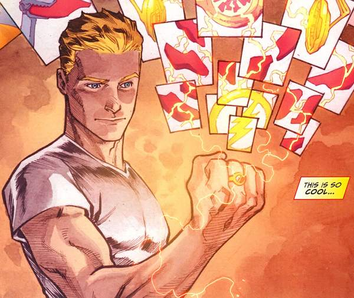

Sobre o Flash: Criado pelos roteiristas e editores Robert Kanigher e John Broome e pelo lendário ilustrador Carmine Infantino, o Flash de Barry Allen apareceu pela primeira vez nos quadrinhos em 1956. Inicialmente esta versão do Flash tinha sido criada para substituir a original que pertencia à Era de Ouro dos quadrinhos. Nessa época o manto do Velocista Escarlate era utilizado pelo icônico Jay Garrick. Desde os anos 50 que o personagem tem passado por diversas mudanças, tendo ainda sido adaptado para a telinha e para o cinema, onde atores como John Wesley Shipp, Grant Gustin e mais recentemente Ezra Miller deram vida ao homem mais rápido do planeta.
Nos quadrinhos o personagem Barry Allen tem sido perseguido pelo infortúnio desde muito cedo. Filho de Nora e Henry Allen, o nascimento de Barry não foi nada fácil, pois para além de ter nascido com duas semanas de atraso, o seu irmão gêmeo foi roubado da sua família logo após ter sido colocado no mundo. Nora Allen, a mãe de Barry teve gêmeos, mas os médicos do hospital mentiram dizendo que uma das crianças morreu no parto. Isso tudo foi parte de um plano para darem o irmão de Barry aos Thawne, pois o seu filho tinha nascido morto. Curiosamente tudo isso teve implicações no futuro. Por ter nascido com duas semanas de atraso, Barry ganhou o hábito de chegar atrasado em todo o lugar. O seu irmão gêmeo um dia também se viria a tornar num vilão que ficou conhecido pelo codinome, Azul Cobalto.
Barry Allen cresceu lendo quadrinhos do seu herói favorito, Jay Garrick o Flash original, no entanto a sua infância iria ficar marcada por um acontecimento terrível. Quando ele tinha apenas 11 anos de idade, a sua mãe foi assassinada e o seu pai foi injustamente dado como culpado pelo crime. Foi a partir deste momento que o pequeno Barry decidiu se focar em apenas um objetivo: arranjar uma maneira de provar a inocência do seu pai. Ele acabou por se formar em ciência forense, conseguindo um trabalho na Policia de Central City, onde começou a desempenhar funções de cientista forense.
Como dissemos, Barry tinha o terrível hábito de chegar atrasado a todo lado e por isso fazia sempre um montão de horas extras para compensar o seu descuido com os horários. Numa dessas noites em que ele se encontrava ainda a trabalhar no laboratório forense da Policia de Central City, Barry estava rodeado de químicos quando um relâmpago entrou pela janela do laboratório e o atingiu diretamente. Curiosamente Barry se levantou imediatamente, não apresentando nenhum tipo de lesão. No entanto, os dias seguintes revelaram que o acidente havia mudado o seu corpo para sempre. Barry reparou que tudo o que estava à sua volta tinha ficado super lento... Mas na realidade o que tinha acontecido é que ele é que estava se movendo a uma velocidade extremamente alta. O cientista forense da Polícia de Central City tinha acabado de ganhar super-velocidade!
